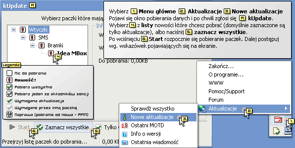

|
Po pierwsze, upewnij siê, czy masz w³±czon± wtyczkê kUpdate. Wtyczka sama raz na jaki¶ czas sprawdza, czy s± dostêpne jakie¶ uaktualnienia lub nowo¶ci. Je¿eli jakie¶ znajdzie, pojawi siê migaj±ca ikonka (zielona strza³ka) w zasobniku systemowym, któr± nale¿y klikn±æ, ¿eby otworyæ okno kUpdate (A). Okno dostêpne jest równie¿ z menu g³ównego - tak jak przedstawiono na obrazku. W obu przypadkach wybieranie paczek do pobrania i jego rozpoczêcie przebiega identycznie. |
|  |